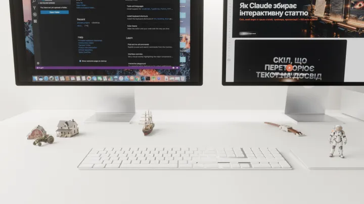
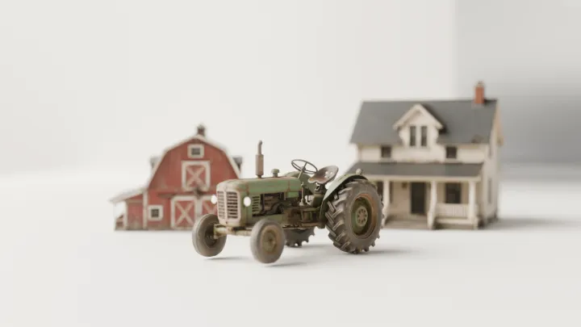
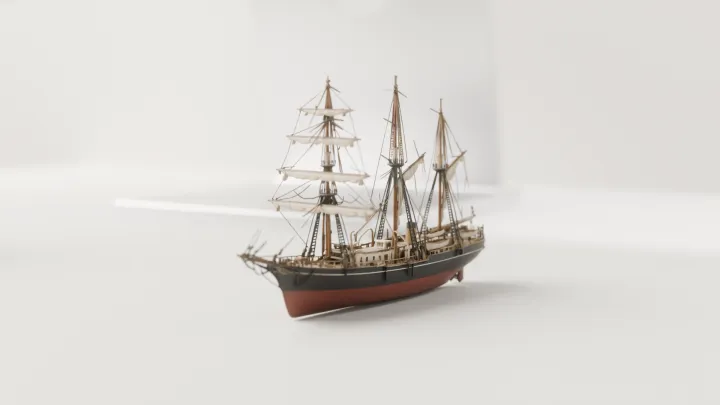
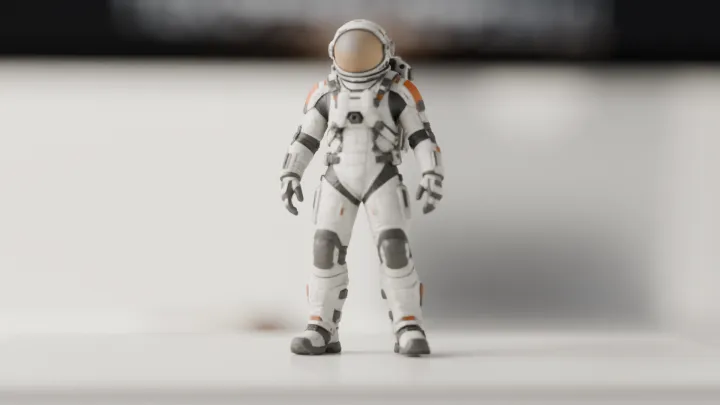
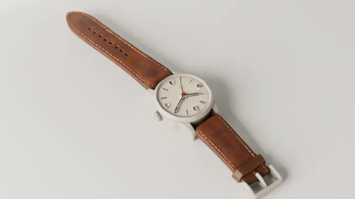
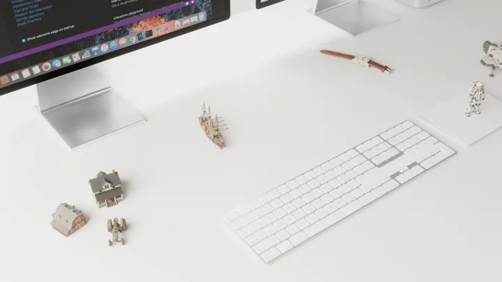
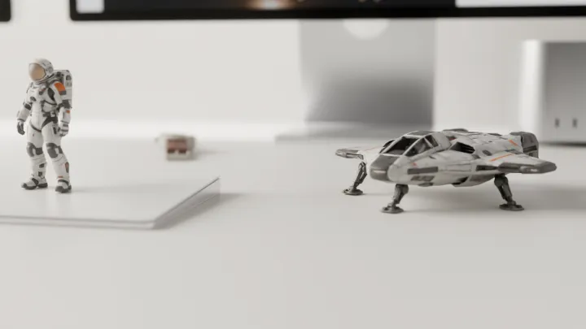

Як Claude збирає інтерактивну статтю
Скіл, який виріс із трьох статей, трейлера, презентації і ~150 моїх правок
Це making of. «Задача трьох тіл», «Фізика „Інтерстеллара“» і «Рецесія в США» знято однаково: продюсер — я, режисер — Claude, знімальна група — ChatGPT, Gemini, Suno, Tripo, Blender і ai slop helper. Кожна моя правка ставала правилом, і з цих правил склався скіл — інструкція, яку Claude підвантажує сам, щойно бачить знайоме завдання. Нижче — як знімалась одна стаття від першого слова до прем’єри, і з чого складається цей «фільм».
01Виробництвовід «22» до прем’єри
Ось як знімалася одна справжня стаття — «Рецесія в США». Гортайте: ліворуч сторінка збирається шарами, праворуч — хто працював на кожному етапі, що хотіли, що пішло не так і яке правило з цього вийшло. На воротах «22», «11» і «пуш» — справжній фрагмент журналу сесії: повідомлення власника й команди, що пішли за ним; на кожному етапі — блок «під капотом» з інструментами, файлами й командами.
Це звичайне управління проєктом: ворота, ролі, критерії готовності, ретроспектива. Тільки команда — з ШІ, а ворота коштують одне слово.
02Знімальна групахто що робить
Як ПМ я призначаю не людей, а інструменти — але питання ті самі: хто відповідає, хто затверджує, де межа відповідальності.
Claude — диригент, але не єдиний виконавець. Картинки малює ChatGPT, 3D збирають Tripo і Blender, стиль текстів править Gemini, музику пише Suno, походження фраз позначає ai slop helper, а цифри приходять із першоджерел. Команда намальована тим самим скілом схем, що й платформа даних у статті «Дані та керування ними»: смуги, вкладені групи, «+» розгортає блок у складові, а кнопки згори проводять шлях від команди власника до сторінки.
Чотири помічники з цього списку — змінні модулі верстата, що друкує статтю: пензель, камертон, кристал і лінза. Модель зроблена тим самим конвеєром, що й 3D у статтях: ChatGPT намалював чотири види — спереду, зліва, справа, ззаду, — Tripo зібрав із них модель (262 тисячі граней, текстура 4K), а Blender зменшив текстури до 2K і стиснув усе до 3,7 мегабайта. Сітку не спрощували: при спрощенні гладкі панелі «мнуться», як фольга.
Інші моделі, які Tripo зібрав для попередніх статей, — космонавт, посадковий модуль, вітрильник, ферма, годинник — стали мініатюрами на тому самому столі, де стояв Лендер. Сцена і світло — з рендерів Лендера, Blender, Cycles.














03Один кадранатомія розділу
Кожен розділ статті має однакову будову: короткий текст, сцена і примітка. Сцена — не ілюстрація, а модель: вона рахує, і її можна зачепити. Спробуйте на живому прикладі нижче — це розділ 02 статті 34 «Як насправді виглядає Гаргантюа» як є: кожен промінь світла рахується за загальною теорією відносності; клік запускає пробний промінь.
Не плутати. Примітка в кінці розділу — не «пастка» і не попередження. Це одне з п'яти коротких уточнень: «Насправді», «Важливо», «Висновок», «Не плутати», «Цікавий факт». Слово «пастка» я заборонив — воно звучить так, ніби читача ловлять.
04Монтаж і фактчекзвідки ця фраза
Найдорожче в роботі з ШІ — не генерація, а вичитка. Помітки походження перетворюють «перечитати все» на «закрити список».
Асистент пише однаково переконливо і те, що взяв із джерела, і те, що щойно вигадав. Тому вичитка перетворюється на суцільне перечитування. Проєкт ai slop helper робить походження видимим: біля кожного блока — помітка «Перевірено», «Гіпотеза», «Мій висновок» або робоча — «Доробити», «Переробити · ai slop», «Видалити». Claude сам ставить їх, коли пише; власник проходить сторінку, змінює помітки й лишає зауваження, а потім каже «опрацюй зауваження».
Спробуйте: клік по помітці змінює її, а кнопка «опрацюй зауваження» виконує цикл — правка, перелік «просив → зробив», лічильник робочих поміток іде до нуля. А перемикач угорі статті показує помітки на самій цій статті.
Висновок. Слоп — це не гіпотеза. Текст, який асистент написав без джерела, позначається «переробити», і прохід власника полягає в тому, щоб звести таких блоків до нуля.
05Тестовий показперевірка — від найдешевшої
Порядок перевірок — це керування вартістю: спершу те, що коштує секунду, і лише потім те, що коштує годину.
Перевірка йде від дешевого до дорогого: синтаксис файлу, консоль, скрипт схеми, знімок у браузері. Повну регресію — лише на запит. Відмітьте кроки, щоб побачити, що кожен ловить.
Цікавий факт. Вбудований у застосунок браузер часто «засинає» і не перемальовує канвас. Тому для сцен скіл каже читати стан програми скриптом (пікселі, лічильники), а вигляд перевіряти у звичайному Chrome.
06Франшизачотири сестри
Франшиза — найкраща перевірка скіла: якщо четверта стаття виходить сестрою першої без окремих пояснень, правила працюють.
Ось що виходить на виході конвеєра: перші екрани статей 33–36. Різні теми — фізика, кіно, економіка й сам скіл, — але одна будова: банер із тихою лівою частиною під заголовок, легенда позначок, нумеровані розділи. Вітрина — продуктові кадри: ліворуч на справжніх 3D-моделях iPhone та iPad «тілт-шифт» — пристрої лежать на столі, різка лише смуга, що гуляє ним, як на фото мініатюри; праворуч «перевід фокуса» — вікно браузера із сайтом Itspired і плаваючими вікнами портфоліо, різкість сама пливе від ближнього краю до дальнього.
07За лаштункамияк Claude відкриває скіл
За лаштунками немає магії — п’ять текстових файлів в одній папці. Claude постійно тримає в голові лише короткий опис скіла; коли запит власника з ним збігається, він відкриває SKILL.md, а далі — тільки той один довідник, який потрібен для задачі. Оберіть запит — і побачите, які рядки він читає і скільки слів скіла насправді потрапляє в контекст.
08Фінальні титрияк зняти своє
Скіл лежить у ~/.claude/skills/building-explorable-articles/: ядро SKILL.md (протокол власника, конвеєр, правила) і чотири довідки — каркас сторінки, ролик і відео, помітки походження, презентація для клієнта. Claude Code знаходить його сам за описом. Достатньо написати «нова стаття в такому ж вигляді, тема — …, 22» — і Claude почне з вивчення попередньої сторінки й дослідження, а не з коду.
Спробуйте самі
Той самий підхід працює для будь-якої повторюваної роботи: зберіть правки власника за кілька ітерацій, перетворіть кожну на правило з причиною — і наступного разу їх не доведеться повторювати.
Межі. Безкоштовний Suno дає кілька завантажень на день; генерації в Tripo й ChatGPT коштують кредити й запускаються лише за командою; субагенти — теж лише за командою, і їхню роботу Claude перевіряє сам; факти все одно перевіряє людина.
Що це означає поза блогом. Той самий цикл — ворота рішень, ролі, перевірка від найдешевшої, уроки, що стають правилами, — працює в будь-якому проєкті, де частину роботи робить ШІ: звіти, презентації, прототипи. Людина не пише більше — вона частіше ухвалює рішення.
Висновок. Хороший скіл — це не промпт «зроби красиво», а стисла історія помилок конкретної команди. Тому він короткий, з причинами в кожному рядку і з посиланнями на робочі приклади.
Посилання
- «Задача трьох тіл» — перша стаття, на якій склався формат
- ai slop helper — помітки походження й зауваження на полях
- Claude Code — Agent Skills (документація Anthropic)
- Ілюстрації — власні згенеровані; музика — Suno; сцени, схеми й трейлер побудовано кодом. Банер «довга витримка правок» (Hero 32, React Bits Pro), ефекти «приціл», «примарні волокна» і вітрина «тілт-шифт / перевід фокуса» (Center Stage) — за ідеями React Bits, переписано власним кодом. 3D-моделі пристроїв: iPhone 15 Pro Max — polyman Studio (CC BY 4.0), iPad Pro — DatSketch (CC BY-NC 4.0), Sketchfab.
- Пост-кредит трейлера — моделі гри SW_TopDown (спрощено, голограмою), Sketchfab. CC BY 4.0: голостіл — eemil; Imperial I Star Destroyer, A-wing, Y-wing, TIE Interceptor, TIE Bomber — LarsH.; Venator — Digital Sock; Nebulon-B — Daniel; X-wing — Lena Katsak. Sketchfab Standard: TIE Fighter, CR90 — Heataker. CC BY-NC-SA 4.0: Mon Calamari — StarWars-Universe.
- Мініатюри на столі — власні моделі (Tripo); моделі столу з рендерів Лендера: Magic Keyboard — jyun_studio (CC BY-NC 4.0), Magic Trackpad — EwanLejkowski (CC BY 4.0), Mac Studio — CGTrader (free).